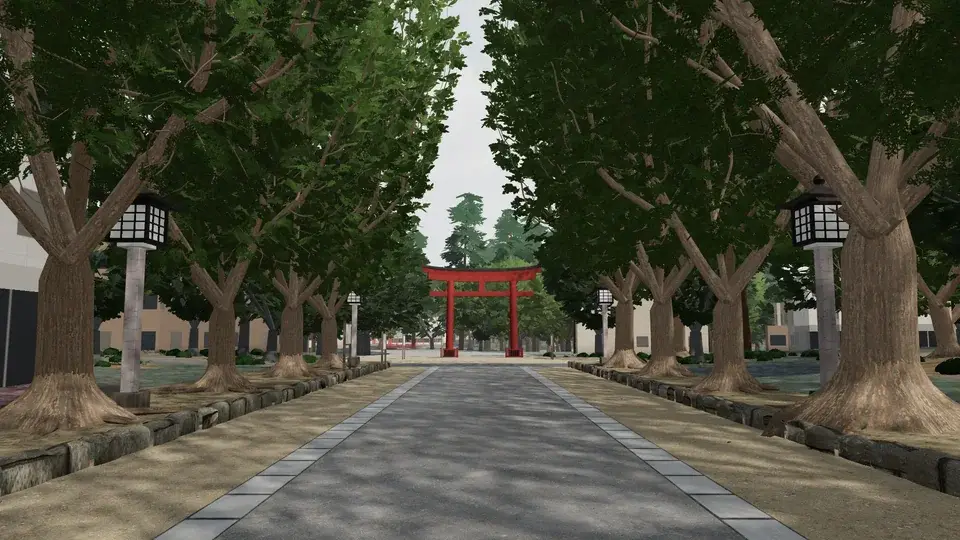

氷川道中
大宮・氷川参道 一の鳥居 → 三の鳥居の手前

参道の両脇の細い溝は、むかしの道幅の線。いつもの道に、そんな手がかりが六つ隠れています。
決められた所で立ち止まり、目の前の物を見て、答えを選びます。迷ったら碧のヒントを。解けると、その物の来歴と、確かめた典拠が開きます。
◎典拠で確かめられること△言い伝え・諸説があること
現地に行けない日は「家で遊ぶ」を選んでください。物の形を、模式の絵で見ながら解けます。
一の鳥居 → 中区間の石の道 → 平成ひろば → 二の鳥居 → 三の鳥居の手前で終わり。渡る道は 4 本です（南大通東線・大宮中央通り・さいたま春日部線・二の鳥居の手前を横切る道）。
答え合わせはこの端末の中だけで行い、どこにも送りません。
結び
家では、氷川道中の 3D の参道を、碧と歩けます。氷川道中をひらく ↗